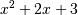
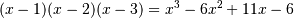
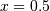

numpy.poly1d¶
- class numpy.poly1d(c_or_r, r=0, variable=None)[source]¶
A one-dimensional polynomial class.
A convenience class, used to encapsulate “natural” operations on polynomials so that said operations may take on their customary form in code (see Examples).
Parameters : c_or_r : array_like
The polynomial’s coefficients, in decreasing powers, or if the value of the second parameter is True, the polynomial’s roots (values where the polynomial evaluates to 0). For example, poly1d([1, 2, 3]) returns an object that represents , whereas poly1d([1, 2, 3], True) returns one that represents .
r : bool, optional
If True, c_or_r specifies the polynomial’s roots; the default is False.
variable : str, optional
Changes the variable used when printing p from x to variable (see Examples).
Examples
Construct the polynomial :
>>> p = np.poly1d([1, 2, 3]) >>> print np.poly1d(p) 2 1 x + 2 x + 3
Evaluate the polynomial at :
>>> p(0.5) 4.25
Find the roots:
>>> p.r array([-1.+1.41421356j, -1.-1.41421356j]) >>> p(p.r) array([ -4.44089210e-16+0.j, -4.44089210e-16+0.j])
These numbers in the previous line represent (0, 0) to machine precision
Show the coefficients:
>>> p.c array([1, 2, 3])
Display the order (the leading zero-coefficients are removed):
>>> p.order 2
Show the coefficient of the k-th power in the polynomial (which is equivalent to p.c[-(i+1)]):
>>> p[1] 2
Polynomials can be added, subtracted, multiplied, and divided (returns quotient and remainder):
>>> p * p poly1d([ 1, 4, 10, 12, 9])
>>> (p**3 + 4) / p (poly1d([ 1., 4., 10., 12., 9.]), poly1d([ 4.]))
asarray(p) gives the coefficient array, so polynomials can be used in all functions that accept arrays:
>>> p**2 # square of polynomial poly1d([ 1, 4, 10, 12, 9])
>>> np.square(p) # square of individual coefficients array([1, 4, 9])
The variable used in the string representation of p can be modified, using the variable parameter:
>>> p = np.poly1d([1,2,3], variable='z') >>> print p 2 1 z + 2 z + 3
Construct a polynomial from its roots:
>>> np.poly1d([1, 2], True) poly1d([ 1, -3, 2])
This is the same polynomial as obtained by:
>>> np.poly1d([1, -1]) * np.poly1d([1, -2]) poly1d([ 1, -3, 2])
Attributes
coeffs order variable Methods
__call__(val) deriv([m]) Return a derivative of this polynomial. integ([m, k]) Return an antiderivative (indefinite integral) of this polynomial.